Positioning with Anchors¶
QML provides anchors to position different items relative to each others.
For each item, there are 7 imaginary lines called anchor lines. An item can be placed in these anchor lines relative to another item(a parent or any sibling).
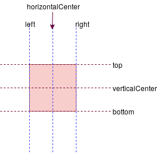
The 7th anchor is baseline, for text items, it's an imaginary line on which a text rests. For letters like g, the descender goes below the baseline. Some non-latin characters can have all characters can have some part below baseline like(ନ୍ଧୁ in Odia).

It's only useful for text based elements.
You can use any of those 7 anchor line properties to place your item.
Example 1¶
We have a green rectangle at (10, 10). We want to align a blue rectangle just below it. We will align the top and left anchor line of the blue rectangle with the bottom and left anchor line of the green rectangle respectively.
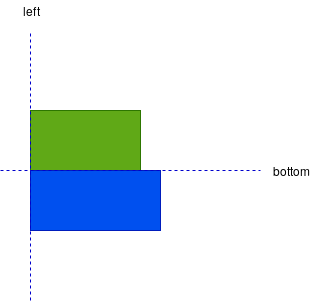
import QtQuick 2.12 import QtQuick.Window 2.12 Window { id: root visible: true width: 800 height: 480 color: "#3c3c3c" title: qsTr("Anchor Line Example-1") Rectangle { id: greenRect x: 10 y: 10 width: 150 height: 120 color: "green" border.color: Qt.lighter(color) } Rectangle { id: blueRect width: 200 height: 120 color: "blue" anchors.left: greenRect.left anchors.top: greenRect.bottom border.color: Qt.lighter(color) } }
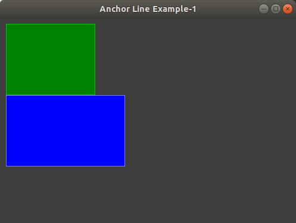
Example 2¶
Now, we want the blue rectangle to be aligned on the right of the green rectangle, exactly at the middle of the right edge.
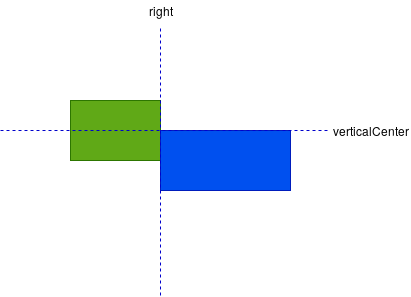
import QtQuick 2.12 import QtQuick.Window 2.12 Window { id: root visible: true width: 800 height: 480 color: "#3c3c3c" title: qsTr("Anchor Line Example-2") Rectangle { id: greenRect x: 10 y: 10 width: 150 height: 120 color: "green" border.color: Qt.lighter(color) } Rectangle { id: blueRect width: 200 height: 120 color: "blue" anchors.left: greenRect.right anchors.top: greenRect.verticalCenter border.color: Qt.lighter(color) } }
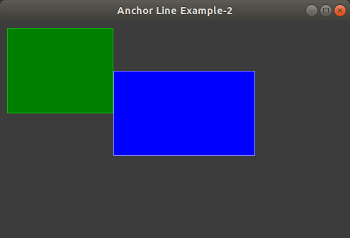
Example 3¶
We want to align a rectangle just below the baseline of text, on the right of text.
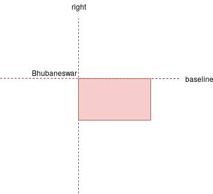
import QtQuick 2.12 import QtQuick.Window 2.12 Window { id: root visible: true width: 800 height: 480 color: "#3c3c3c" title: qsTr("Baseline Anchor Line Example") Text { id: a_text x: 10 y: 10 color: "green" text: "Bhubaneswar" } Rectangle { id: blueRect width: 100 height: 60 color: "pink" anchors.top: a_text.baseline anchors.left: a_text.right } }
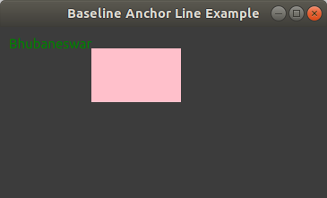
fill and centerIn¶
There are two more properties fill and centerIn which take another Item and aligns accordingly.
fill completely accupies. Usually, all anchor lines, except verticalCenter and horizontalCenter, are aligned fully. So, height and width should be same.
import QtQuick 2.12 import QtQuick.Window 2.12 Window { id: root visible: true width: 800 height: 480 color: "#3c3c3c" title: qsTr("Anchor Fill Example") Rectangle { id: rootRect x: 10 y: 10 height: textItem.paintedHeight width: textItem.paintedWidth color: "blue" } Text { x: 10 y: 10 id: textItem text: "Bhubaneswar" color: "lightgreen" anchors.fill: rootRect } }
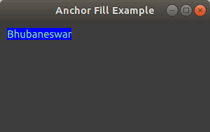
In case of centerIn, verticalCenter and horizontalCenter anchor lines are aligned fully.
import QtQuick 2.12 import QtQuick.Window 2.12 Window { visible: true width: 640 height: 480 title: qsTr("Hello World") Rectangle { id: mainRect x: 10 y: 10 height: 100 width: 100 color: "cyan" } Rectangle { id: innerRect x: 10 y: 10 height: 60 width: 50 color: "green" anchors.centerIn: mainRect } }
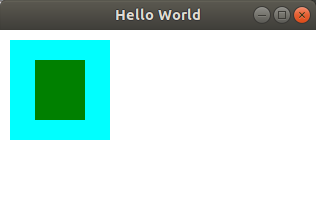
By specifying multiple horizontal or vertical anchors you can control the size of an item. In the following case, the left and right rectangle have fixed width. The middle rectangle will always accupy the rest of spaces.
import QtQuick 2.12 import QtQuick.Window 2.12 Window { id: root visible: true width: 800 height: 480 color: "#3c3c3c" title: qsTr("Anchor Example - 4") Rectangle { id: leftRect color: "blue" width: 30 height: 100 anchors.left: parent.left anchors.top: parent.top } Rectangle { id: rightRect color: "blue" width: 30 height: 100 anchors.right: parent.right anchors.top: parent.top } Rectangle { id: middleRect color: "green" height: 100 anchors.left: leftRect.right anchors.right: rightRect.left } }
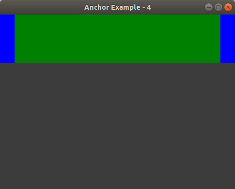
Margins and Offsets¶
Margins specify the amount of empty space to leave to the outside of an item's anchor. There are 4 types of margins(one for each edge).
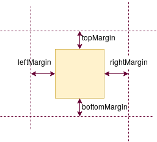
anchors.margin will set the all the 4 margins.
It's necessary to set the anchor to set the margin.
import QtQuick 2.12 import QtQuick.Window 2.12 Window { id: root visible: true width: 800 height: 480 color: "#3c3c3c" title: qsTr("Margin Example") Rectangle { id: mainRect x: 10 y: 10 width: 150 height: 120 color: "green" border.color: Qt.lighter(color) } Rectangle { id: anotherRect width: 200 height: 120 color: "blue" anchors.left: mainRect.left anchors.top: mainRect.bottom anchors.leftMargin: 10 border.color: Qt.lighter(color) } }
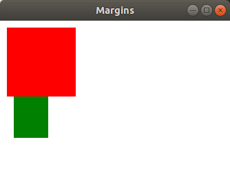
Margins can also be negative.
import QtQuick 2.12 import QtQuick.Window 2.12 Window { id: root visible: true width: 800 height: 480 color: "#3c3c3c" title: qsTr("Negative Margin Example") Rectangle { id: mainRect x: 10 y: 10 width: 150 height: 150 color: "green" radius: width/2 border.color: Qt.lighter(color) } Rectangle { id: anotherRect width: 200 height: 120 color: "blue" anchors.left: mainRect.right anchors.top: mainRect.bottom anchors.leftMargin: -25 anchors.topMargin: -20 border.color: Qt.lighter(color) } }
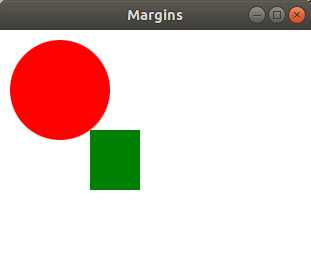
offsets allow positioning to be manipulated using the center anchor lines, offset specify empty space around the central anchor lines. -ve offset value will pull towards the corresponding axis(verticalCenterOffset towards x-axis) and +ve offset pulls away from the corresponding axis.
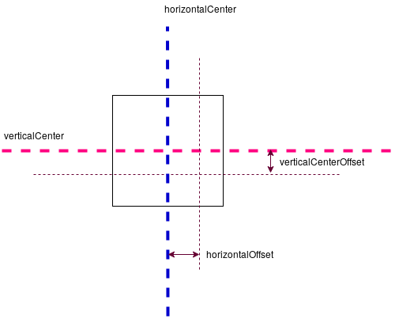
import QtQuick 2.12 import QtQuick.Window 2.12 Window { id: root visible: true width: 800 height: 480 color: "#3c3c3c" title: qsTr("Offset Example") Rectangle { id: mainRect x: 10 y: 10 height: 100 width: 100 color: "green" border.color: Qt.lighter(color) } Rectangle { id: anotherRect height: 60 width: 50 color: "blue" border.color: Qt.lighter(color) anchors.verticalCenter: mainRect.bottom anchors.left: mainRect.right anchors.verticalCenterOffset: -10 } }
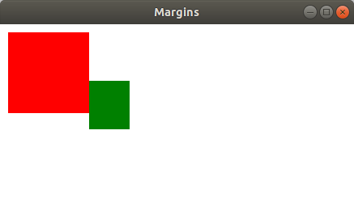
Thanks for reading.